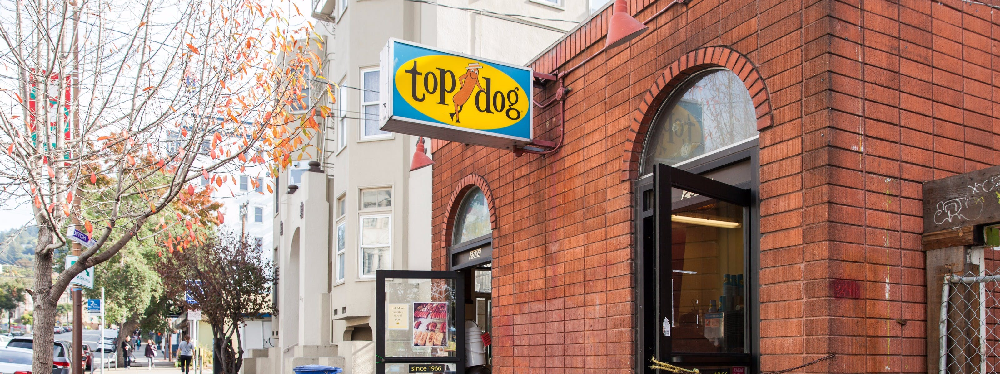

top dog grew out of a boy's love of sausage, a staple in his German immigrants' New York home over the WWII years. Steaks? Tubesteaks! His paper route to a well-mixed neighborhood assured that Italian, Polish, even Hungarian sausages were soon no strangers to that developing appetite and palate. Nor had he far to go to a cart or stand offering kosher style "Franks", usually steeped but better off the griddle. Goodness! With kraut n' mustard, please. Raw onions, ketchup (not "catsup") and mayo were unheard of on hot dogs. Burgers maybe ... oh, but that was far away and another day ...
We've been cookin' up quality dogs since 1966 and with 3 locations around
Berkeley and Oakland, we're bound to satisfy more than just your hunger.